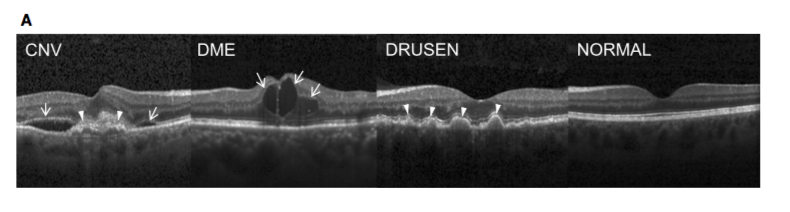

Retinal optical coherence tomography (OCT) is an imaging method that captures detailed sectional images of the retinas, in living patients. Its estimated that around 30 million OCT scans are conducted annually and analyzing and interpreting these images requires an amount of time.
(A) (Far left) choroidal neovascularization (CNV) with neovascular membrane (white arrowheads) and associated subretinal fluid (arrows). (Middle left) Diabetic macular edema (DME) with retinal-thickening-associated intraretinal fluid (arrows). (Middle right) Multiple drusen (arrowheads) present in early AMD. (Far right) Normal retina with preserved foveal contour and absence of any retinal fluid/edema.
Using a pre-trained ResNet18 Convolutional Neural Net model, the weights of only the last layer of the network were learned using transfer learning. Why Transfer learning? With transfer learning, you start with an existing (trained) neural network used for image recognition - and tweak it here and there to train a model that suits your specific needs. What is the purpose of doing that? We will need as many as a million images to train a reasonable neural network. Training a neural network would require approximately 300,000 image samples. It is a guess to determine whether the training set in our case would have been sufficient for a neural network to be trained from scratch if we had 40000+ images in our training set. As a result, the create_cnn() function was used to load a pre-trained ResNet18 network, which trained on about a million images from the ImageNet database.